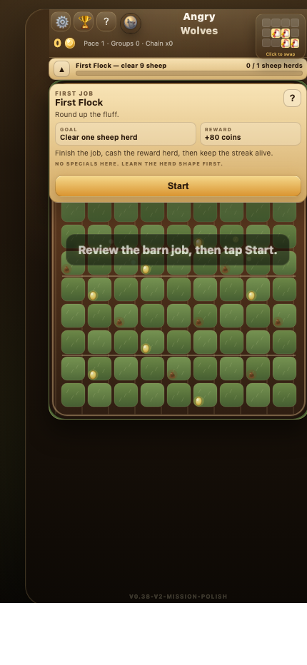
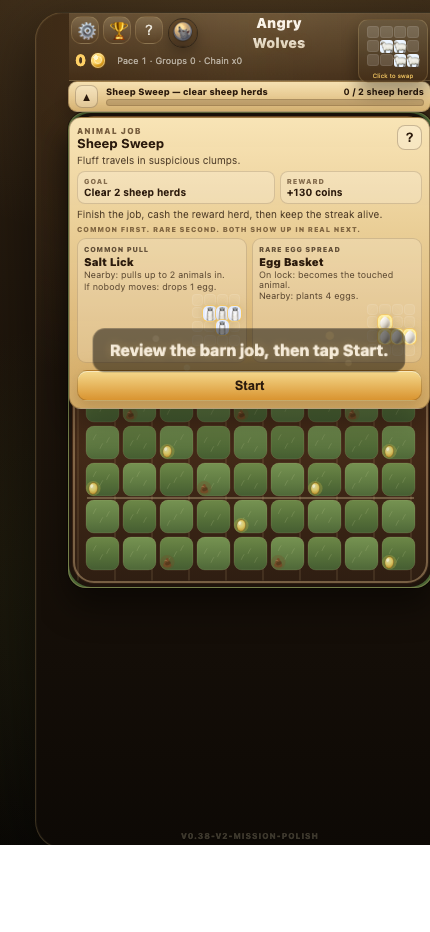
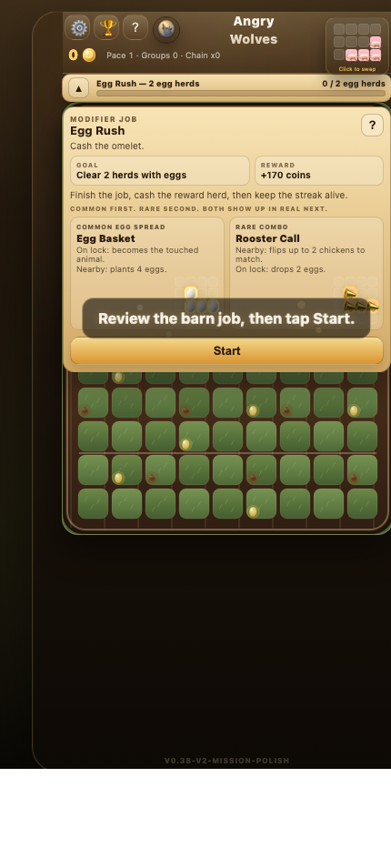
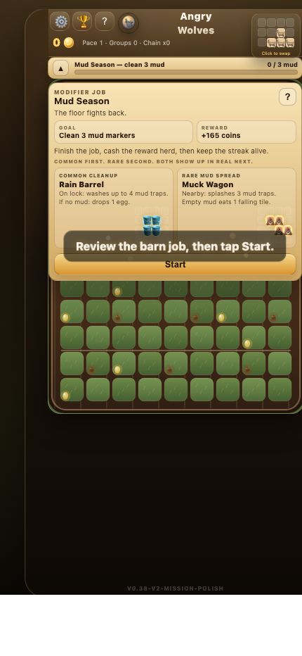
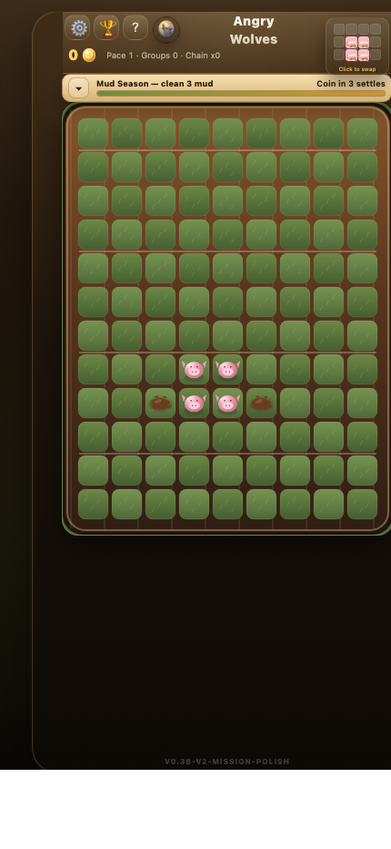
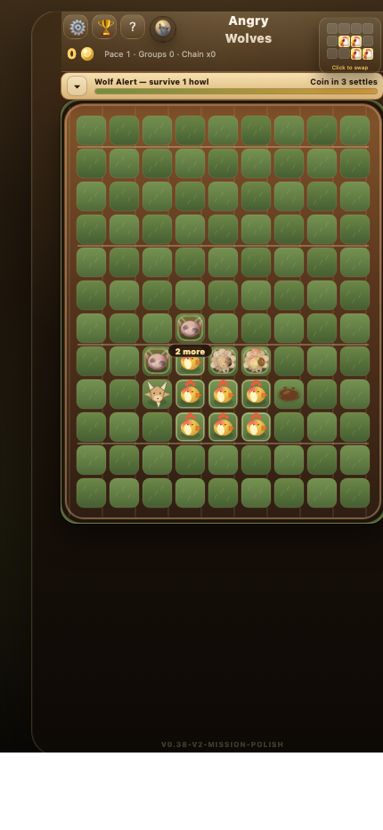
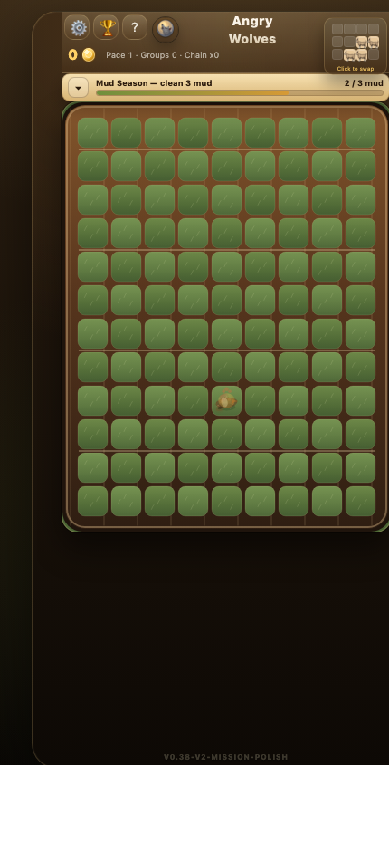
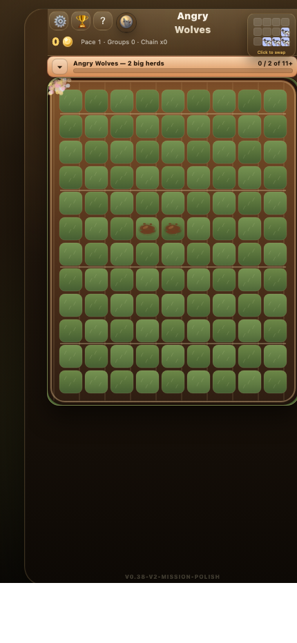
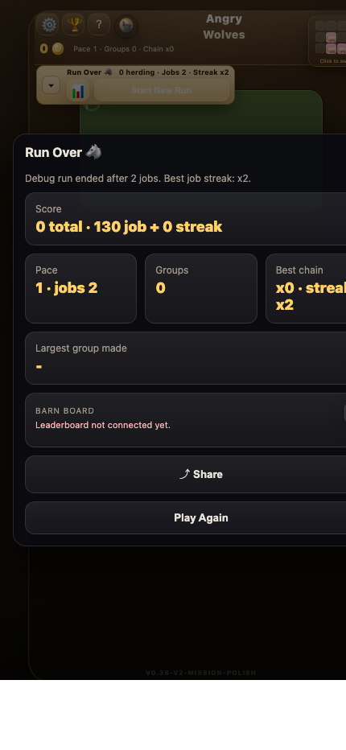
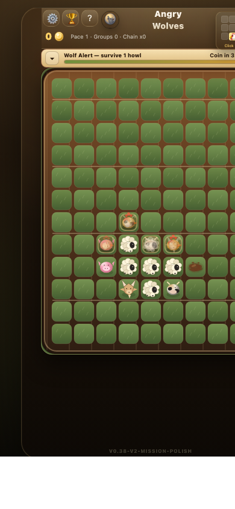

This PDF packages the last Codex response for the V2 mission-polish pass, plus the screen captures generated for review.
Worked on existing branch `tune/v2-mission-polish`, which is already based on current `origin/main` at `c2caf06`. No commit, merge, deploy, or push was made in this pass. **Changed** - [game.js](/Users/kevinhegg/Documents/angry-wolves-tune-v2-mission-polish/game.js) - [MISSION_LADDER_V2.md](/Users/kevinhegg/Documents/angry-wolves-tune-v2-mission-polish/MISSION_LADDER_V2.md) - [ROLLBACK_PLAN.md](/Users/kevinhegg/Documents/angry-wolves-tune-v2-mission-polish/ROLLBACK_PLAN.md) - Screenshots: [refresh-assets/mission-polish-v2](/Users/kevinhegg/Documents/angry-wolves-tune-v2-mission-polish/refresh-assets/mission-polish-v2) - Full diff: [full-diff.patch](/Users/kevinhegg/Documents/angry-wolves-tune-v2-mission-polish/refresh-assets/mission-polish-v2/full-diff.patch) **What Changed** - Code and `MISSION_LADDER_V2.md` now agree on the polish spec. - Early animal missions still scale to `1 herd` for first sessions, then return to `2 herds`. - Added fuller `?debugMissionFlow=1` logs: raw/scaled targets, previous mission/family, weights, repeats, streak, rewards. - Added lightweight family-repeat down-weighting so mission flow varies a bit more. - Angry Wolves now shows/plays the warning cue: `Angry Wolves: big howl, big trouble.` - Added screenshot-only debug states for Rain Barrel, Pack Howl, mud-eat, and Angry Wolf effect captures. - Reward/streak rules unchanged: flat mission rewards, capped streak bonus, no restored multipliers. - Version remains `v0.38-v2-mission-polish`; leaderboard metadata remains V2-separated with cols/rows/job fields. **Validation** - `node --check game.js` passed. - `git diff --check` passed. - No `package.json` exists, so there is no npm build/test command to run. - Safety patch created: [PRE_MISSION_POLISH_SAFETY.patch](/Users/kevinhegg/Documents/angry-wolves-tune-v2-mission-polish/PRE_MISSION_POLISH_SAFETY.patch). It is empty because there were no tracked uncommitted changes before this pass. **Screenshots**    **Test URL** Server is still on port `4175`: [http://192.168.0.30:4175/index.html?debugMissionFlow=1&_bust=v038polish2](http://192.168.0.30:4175/index.html?debugMissionFlow=1&_bust=v038polish2) Status: waiting for approval before committing.
The commit includes the V2 mission polish code/docs changes, the mission-polish screenshot package, this PDF report, and a small static asset query bump in index.html to reduce iPhone Safari cache confusion. It does not include older unrelated artifact folders.









